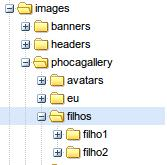
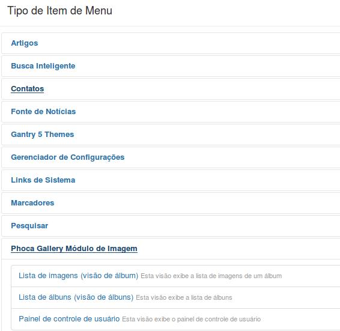
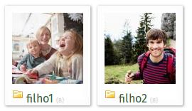
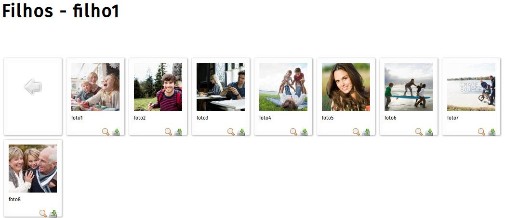
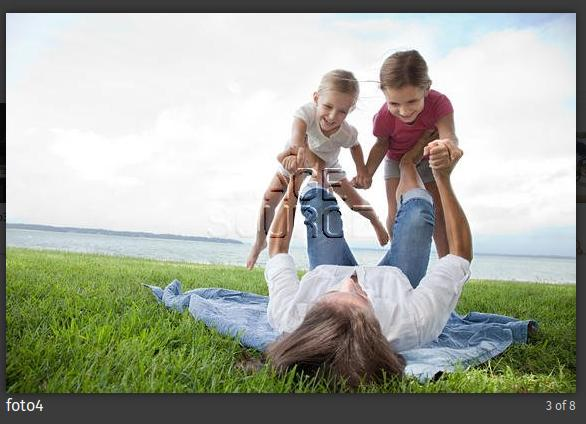

Criando uma Galeria de Imagens no Joomla
O Phoca Gallery é um ótimo componente para a criação de galerias de imagens no Joomla. Tem muitos e bons recursos.
Como existem muitos detalhes na criação de galerias com ele então resolvi fazer este pequeno tutorial.
Download
https://www.phoca.cz/download/category/1-phoca-gallery-component
No site acima efetuar o download do componente e da tradução/language para pt-BR, ambos para a versão 3 do Joomla.
Instalar ambos de forma padrão.
Se na instalação do Phoca Gallery aparecer o erro:
Erro
Houve um erro ao carregar este arquivo para o servidor.
Tamanho máximo de envio de arquivo PHP é muito pequeno: isso é definido no php. ini nas configurações upload_max_filesize e post_max_size suas do PHP (localizado nos arquivos php.ini e/ou .htaccess)
Não foi possível encontrar o pacote de instalação
E não souber como proceder, leia o artigo Joomla\Dicas\Aumentando o tamanho dos uploads no php.ini aqui neste site.
Vamos supor que desejamos criar duas galerias de imagens: uma para cada filho e ambas aparecendo no site sob o menu Filhos.
Criação dos diretórios para as imagens
Criar o diretório filhos e dentro dele criar filho1 e filho2, tudo em images\phocagallery
Dica: uma boa indicação para gerenciador de arquivos vai para o eXtplorer:
http://extplorer.net/files
A vantagem é que fazemos tudo confortavelmente no próprio Joomla, sem precisar acessar o cPanel ou o servidor diretamente.
Com ele podemos criar os diretórios, enviar os arquivos por upload e muito, muito mais.
Abra o eXtplorer em Componentes - eXtplorer
Crie um diretório filhos em
images\phocagallery\filhos
Criar dentro de filhos um subdiretório para cada filho:
images\phocagallery\filhos\filho1
images\phocagallery\filhos\filho2
Deve ficar assim:

Upload das fotos
Envie todas as imagens para cada diretório.
Criar as 3 categorias no Phoca Gallery, filhos e dentro dela filho1 e filho1
Filhos
Filho1 - esta categoria é uma categoria filha da Filhos
Filho2 - esta categoria é uma categoria filha da Filhos
Componentes - Phoca Gallery
Categorias - Novo
Título - Filhos
Diretório de álbum - Selecionar diretório - clicar na setinha verde em filhos
Salvar e Fechar
Criar a subcategoria Filho1
Componentes - Phoca Gallery
Categorias - Novo
Título - Filho1
Categoria pai - Filhos
Diretório de álbum - Selecionar diretório - clicar sobre a pasta filhos e então na setinha verde em filho1
Salvar e Fechar
Criar a subcategoria Filho2
Componentes - Phoca Gallery
Categorias - Novo
Título - Filho2
Categoria pai - Filhos
Diretório de álbum - Selecionar diretório - clicar sobre a pasta filhos e então na setinha verde em filho2
Salvar e Fechar
Criar os thumbnails/miniaturas das Fotos para casa subcategoria
Filhos 1
Componentes - Phoca Gallery
Imagens - Multipla adição
Categoria - Filhos - Filho1
À direita clique no link filhos e depois marque o checkbox de filho1
Salvar e Fechar
Filhos 2
Componentes - Phoca Gallery
Imagens - Multipla adição
Categoria - Filhos - Filho2
À direita clique no link filhos e depois marque o checkbox de filho2
Salvar e Fechar
Nossas galerias estão prontas mas nada aparece no site ainda. Para que apareçam precisamos criar um item de menu adequado para as mesmas.
Criarei um menu Filhos que abra as galerias do Phoca Gallery na categoria Filhos
Menus - Main Menu - Adicionar item de menu
Título - Filhos
Tipo de Item de Menu - clicar em Selecionar
Phoca Gallery Modulo de Imagem - Lista de albuns
Salvar e Fechar
Veja o detalhe do botão Selecionar:

Agora veja como ficou no site:
Ao clicar no menu Filhas aparecem ambas as galerias

Ao clicar em filho1 aparece a tela abaixo:

Quando clicar em uma das fotos (foto4) ela aparece ao centro em destaque assim:

Trabalhando as Imagens
Antes de efetuar o download das fotos para o servidor redimensione-as de forma a ter o melhor desempenho, ou seja, deixe-as com a dimensão:
650x460 px.
Uma boa extensão para efetuar medidas de parte da tela é a MeasureIt, que funciona bem no Firefox.
Basta clicar no canto superior esquerdo e arrastar para o inferior direito e anotar as dimensões em pixel.